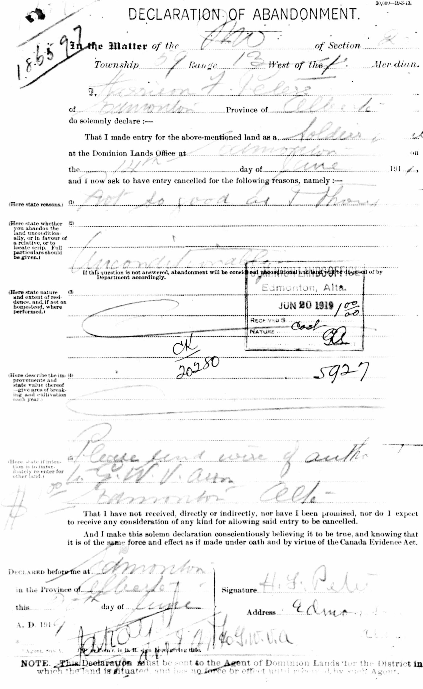
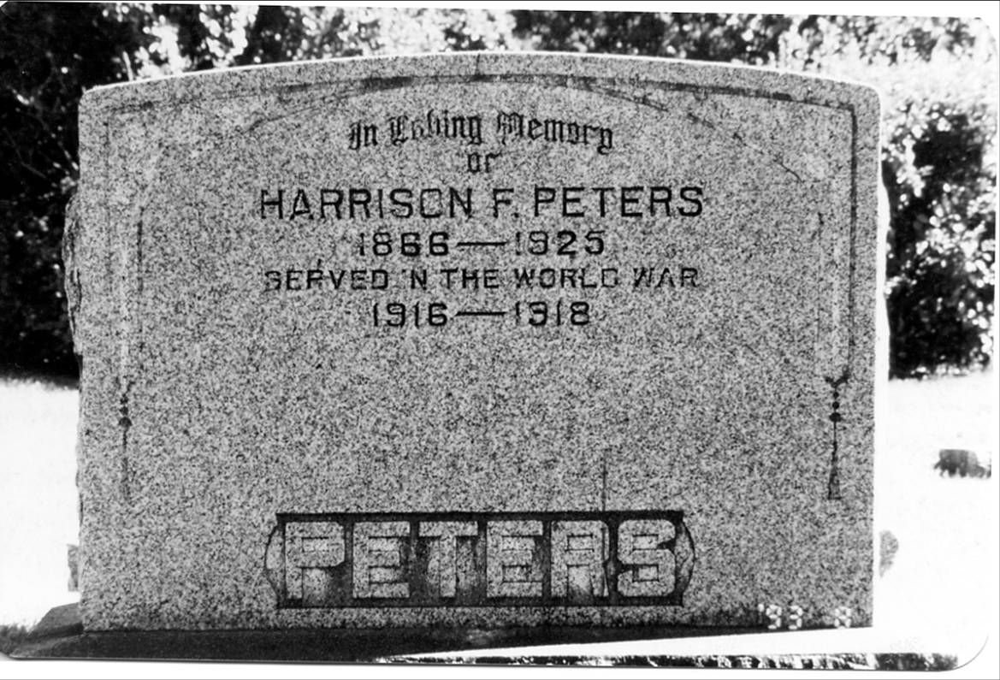
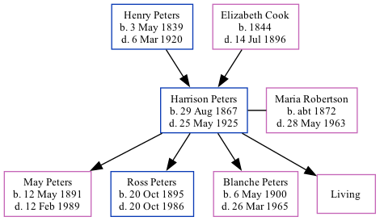

Harrison Fletcher Peters 1867 - 1925
[ Home ] | [ Calendar ] | [ Surnames Index ] | [ Family History ]The youngest of 4 children of Henry Peters and Elizabeth Cook, Harrison Peters, the third cousin twice-removed on the father's side of <a href="I1.html">Nigel Horne</a>, was born in Richibucto, Kent, New Brunswick, Canada on Aug 29, 1867<span class="citation">1,2,3,4,5,6,7,8</span> and married Maria Robertson (with whom he had 4 children: <a href="I1157.html">May</a>, <a href="I1158.html">Ross</a>, <a href="I1156.html">Blanche Viola</a> and <a href="I1155.html">Marie Jean</a>, along with 1 surviving child) in New Westminster, British Columbia, Canada on Jun 24, 1890<span class="citation">9</span>.</p><p>Throughout his life, Harrison lived in several places: at his birthplace in 1871<span class="citation">8</span> and in 1881<span class="citation">2</span>; in Rossland, Kootenay Boundary, British Columbia in 1901<span class="citation">3</span>; in Humboldt, Saskatchewan, Canada in 1906<span class="citation">4</span> and in 1911<span class="citation">5</span>; and in Edmonton, Alberta, Canada on Jun 1, 1921<span class="citation">6</span>. <p>He died on May 25, 1925 in Calgary, Alberta<span class="citation">7</span> and was buried there at Burnsland Cemetery after May 25, 1925<span class="citation">7</span>.
Parents
- Henry Watson was born on May 3, 1839
- Elizabeth A was born in 1844
Children
- May was born on May 12, 1891
- Ross was born on Oct 20, 1895
- Blanche Viola was born on May 6, 1900
Citations
- 1871 Census of Canada Ancestry.com Operations Inc
- 1881 Census of Canada Ancestry.com Operations Inc
- 1901 Census of Canada Ancestry.com Operations Inc (Marital Status: Married; Relation to Head of House: Lodger)
- 1906 Canada Census of Manitoba, Saskatchewan, and Alberta Ancestry.com Operations Inc (Relation to Head of House: Head; Marital Status: Married)
- 1911 Census of Canada Online publication - Provo, UT, USA: Ancestry.com Operations Inc, 2006. .Original data - Library and Archives Canada. Census of Canada, 1911. Ottawa, Ontario, Canada: Library and Archives Canada, 2007. http://www.collectionscanada.gc.ca/databases/census-19 (Marital Status: Married; Relation to Head of House: Head)
- 1921 Census of Canada Ancestry.com Operations Inc (Marital Status: Married; Relation to Head of House: Head)
- Canada, Find A Grave Index, 1600s-Current Ancestry.com Operations, Inc.
- Kent County, New Brunswick Census, 1871: Eight Subdistricts Ancestry.com Operations Inc
- British Columbia, Canada, Marriage Index, 1872-1935 Ancestry.com Operations Inc
Media
Harrison Fletcher - homestead report

Harrison Peters - gravestone

Family Tree
Generated by Ged2Site. Last updated on Jul 20, 2025